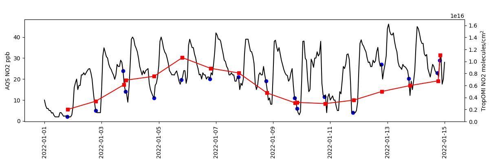

Note
Go to the end to download the full example code
Phoenix AQS vs TropOMI¶
Timeseries comparison of NO2 from AQS and TropOMI in Phoenix.
import matplotlib.pyplot as plt
import pyrsig
# Create an RSIG api isntance
# Define a Time and Space Scope: here end of February around Phoenix
rsigapi = pyrsig.RsigApi(
bdate='2022-01-01', edate='2022-01-15',
bbox=(-112.3, 33.25, -111.85, 33.65)
)
# Get AQS NO2 with dates parsed and units removed from column names
aqsdf = rsigapi.to_dataframe('aqs.no2', parse_dates=True, unit_keys=False)
# Get TropOMI NO2
tomino2df = rsigapi.to_dataframe(
'tropomi.offl.no2.nitrogendioxide_tropospheric_column',
unit_keys=False, parse_dates=True
)
# Create spatial medians for TropOMI and AQS
tomids = tomino2df.groupby('time').median(numeric_only=True)[
'nitrogendioxide_tropospheric_column'
]
aqsds = aqsdf.groupby(['time']).median(numeric_only=True)['no2']
# Subset AQS to overpass times
oaqsds = aqsds.loc[aqsds.index.isin(tomids.index.floor('1h'))] # just overpass t
# Create axes with shared x
fig, ax = plt.subplots(figsize=(12, 4),
gridspec_kw=dict(bottom=0.25, left=0.05, right=0.95))
ax.tick_params(axis='x', labelrotation=90)
tax = ax.twinx()
# Add AQS with markers at overpasses
ax.plot(aqsds.index.values, aqsds.values, color='k')
ax.scatter(oaqsds.index.values, oaqsds.values, marker='o', color='b')
# Add TropOMI NO2
tax.plot(tomids.index.values, tomids.values, marker='s', color='r')
# Configure axes
ax.set(ylabel='AQS NO2 ppb')
tax.set(ylim=(0, 1.7e16), ylabel='TropOMI NO2 molecules/cm$^2$')
plt.show()
# Or save out figure
# fig.savefig('phoenix.png')
Total running time of the script: ( 0 minutes 29.796 seconds)